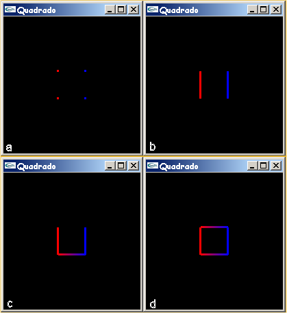

|
Introdução à OpenGL Professora Isabel Harb Manssour |
|
09. Linhas, Pontos e Polígonos
Com apenas algumas primitivas
simples, tais como pontos,
linhas e polígonos, é possível criar estruturas complexas. Em outras
palavras,
objetos e cenas criadas com OpenGL consistem em simples primitivas
gráficas que podem ser combinadas de várias
maneiras [Wright 2000]. Portanto, OpenGL fornece ferramentas para
desenhar pontos, linhas e polígonos, que são formados por um
ou mais vértices. Neste caso, é necessário passar uma lista de vértices,
o que pode ser feito entre duas chamadas de funções OpenGL:
glBegin(GL_POINTS); glColor3f(0.0f, 0.0f, 0.0f); glVertex2i(100, 50); glVertex2i(100, 130); glVertex2i(150, 130); glEnd();
Para desenhar outras primitivas, basta trocar
GL_POINTS, que exibe um ponto para cada chamada ao comando glVertex, por:
A função glVertex2i pertence à biblioteca GL e
possui dois argumentos inteiros. De maneira análoga, conforme explicado no
capítulo 4,
também é possível passar valores de ponto flutuante no lugar de inteiros,
e três coordenadas (x,y,z) no lugar de duas usando, por exemplo, as seguintes chamadas às funções OpenGL:
Para ilustrar a diferença na utilização de algumas primitivas gráficas o código apresentado no capítulo 8 foi alterado da seguinte maneira: inicialmente, os parâmetros passados para a função glutInitWindowSize foram alterados para (200,200), para diminuir o tamanho da janela GLUT; depois, antes da função glBegin(GL_QUADS) foram chamadas as funções glPointSize(3) e glLineWidth(3); finalmente, GL_QUADS, foi substituído por GL_POINTS, GL_LINES, GL_LINE_STRIP e GL_LINE_LOOP, gerando as imagens apresentadas na figura 9.1.  Figura 9.1 - Imagens geradas com a utilização de (a) GL_POINTS, (b) GL_LINES, (c) GL_LINE_STRIP e (d) GL_LINE_LOOP
|